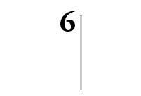
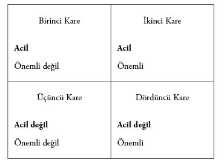
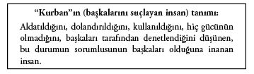
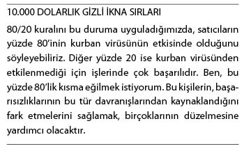

Sonuç Odaklı Düşünce
Birçok konuda olduğu gibi, gizli ikna taktiklerini en verimli şekilde kullanabilmenin yolu da arzulanan sonuçları önceden belirlemektir.
Olmak, sahip olmak, yapmak istediğiniz her şey zihinde başlar. Başarının başlangıç noktası, kendi zihninizdir. İster bir insan olsun, ister bir yer, isterse bir obje, arzuladığınız şeyi önce zihninizde canlandırın. Ardından da buna ulaşmanızı sağlayacak bir plan oluşturun.
Bebekken, karnınız acıktığında anne-babanızın dikkatini çekmeye gayret ederdiniz. Bu amaçla ne yapardınız? Ağlardınız. İşe de yarardı. İhtiyacınız olan ilgiyi görmeye başlar, karnınızı doyururdunuz. Görünürdeki bu basit yöntem, ikna konusunda oldukça başarılı olmuştur. Bu anlattığımız şey, Sonuç Odaklı Düşünce’nin temel örneklerinden biridir. Bebeğin bir arzusu vardır (açlığını gidermek), bu nedenle, istediğini elde etmek (karnını doyurmak) için harekete geçer (ağlar).
Formül: Arzu ==> Odaklanmış Eylem(ler) ==> Sonuç
İkna süreci, zihinde başlar. Ne istediğinizden, ne kadar emin olursanız, başarılı olma ve istediğiniz şeyi elde etme şansınız da o kadar artar.
Başarılı insanlarla vasatları birbirinden ayıran şeyleri araştırırken, temel bir kişilik özelliğiyle karşılaştım. Başarılı insanları, sıradan insanlardan ayıran bu özellik neydi?
Sonuç Odaklı Düşünce
Gerçekten başarılı olan insanlarla elinden geleni yaptığı halde başaramayan insanlar arasında bir fark vardır. Bunun ne olduğunu öğrenmek ister misiniz? Bu, Sonuç Odaklı Düşüncedir. Herhangi bir konuda başarılı olabilmek, disiplin gerektirir. Disiplin de yüzde yüz çaba, sabit konsantrasyon, başarılı sonuçlara ulaşana dek amacın peşinden koşma kararlılığı gerektirir. Bu kararlılık, maalesef iş dünyasındaki insanların büyük bölümünde bulunmuyor. Bu nedenle, sonuç odaklı düşünmeye başladığınızda, arzuladığınız sonuçları elde etme konusunda çok daha başarılı olacaksınız.
Sonuç Odaklı Düşünce, amaçlarınızı ve ulaşacağınız sonuçları zihninizde canlandırma, bu sonuca ulaşmak için gereken eylemleri formüle etme ve amaca ulaşana dek bu eylemleri sürdürme becerisidir.
Bu odaklanmış düşünce sisteminin birçok yararı vardır. Bunların en basitlerinden biri de, herhangi bir durumu, yararlanabileceğiniz bir fırsata dönüştürebilme becerisidir.
Başarılı olabilmeniz için rakibinizden en az bir adım önde düşünebilmeniz gerekir. Rakibiniz kimdir? Rakibiniz, sizinle, istediğiniz şey arasına giren herkes ve her şeydir.
Birçok insanın karşılaştığı sorunlardan biri de, ne istediğini tam olarak bilememektir. Odaklanacakları bir hedef yoktur. Sürekli dikkatlerinin dağılmasına engel olamazlar. Sürüklenirler.
Güçlü odaklanmış düşüncenin en zorlu yanlarından biri, bunu sürdürmektir. Çevrenizdeki her şey dikkatinizi dağıtmaya, enerjinizi, hedefinize doğru tek bir adım atamayacak hale gelene dek tüketmeye gayret eder. O an, sadece yolunuzu şaşırmakla kalmaz, bitkin de düşersiniz. Emeğinizi ve zamanınızı boşa harcamış olursunuz. Bu dakikaları, saatleri, günleri, ayları asla geri alamazsınız.
Son nefesinizi vermeye bir gün daha yaklaşmış durumdasınız. Gününüzü güzel geçirdiniz mi? Zamanınızı akıllıca kullandınız mı? Nihai amacınıza ulaşmaya yaklaştınız mı? Yanıtınız hayırsa da kendinize kızmayın; zihninizi tekrar odaklayın ve yarın sabah baştan başlayın. Her yeni gün yeni bir başlangıç; doğru ve iyi şeyler yapma, amacınıza bir (ya da iki, üç) adım daha yaklaşma fırsatıdır.
Fark
Bazı insanların çok şanslı olduğunu düşündüğünüz oldu mu? Sektör liderlerine baktığınızda, şansın onlardan yana olduğunu düşündüğünüz?
Bundan vazgeçin. Neden böyle düşünüyorsunuz? Hata yapıyorsunuz. Bu insanlar şanslı falan değil. Onlar, çok çalışarak elde ettikleri başarının tadını çıkarıyorlar. Onlarla sizin aranızdaki fark, odaklanmadır. Odaklanma becerisine sahip bu insanlar, isteklerini elde edene dek bu odaklanmayı sürdürmeyi başarabiliyor. Ne istediklerini çok iyi biliyorlar. Başarılı insanlar, karşısındaki insanları, nesneleri, durumları, nihai hedefi açısından karşılaştırır. O kişi, nesne ya da durum başarılı insanı amacına bir adım daha yaklaştırıyorsa, kendisini amacına yaklaştıracak insanları ikna etmek için elinden geleni yapar. Kendilerini amaçlarına yaklaştırmayan şeylerle de boşuna zaman harcamazlar.
Şans Denilen Kavramı Aklınızdan Çıkarın
Sizce Bill Gates, şansı sayesinde mi devasa bir şirket kurarak dünyanın en zengin adamı haline geldi? Hayır! Bill Gates şanslı değildi. Bir vizyonu, gerçekleştirmeye kararlı olduğu bir hedefi vardı. Microsoft’u tesadüfen ya da şansı sayesinde kurmadı.
Odaklanmış Düşünce Sistemine Sahip İnsanlar Kolayca Fark Edilir
Odaklanmış, yaşamlarının belirli alanları konusunda net fikirlere sahip insanları hemen tanıyabilirsiniz. Örneğin; sağlık odaklı bir insan, beslenme ve egzersiz alışkanlıklarına yönelik hareketlere sahiptir. Böyle bir odaklanmaya sahip insanlar, kilo alıp göbek yapmaz. Hiçbir şeyin günlük egzersiz programlarını engellemesine izin vermezler. Kimsenin kendilerini rahatsız etmesine, dikkatlerini dağıtmasına, zamanlarını çalmasına izin vermezler. Çünkü, odaklanmışlardır. Sonuca ulaşmak isterler ve bunu başarmayı garanti altına almanın yolunun, sağlıklı ve formda kalabilmek için yapılması gerekenleri her gün düzenli olarak yapmak olduğunu bilirler.
Bu düşünce yapısına sahip satış profesyonelleri, diğer meslektaşlarından çok daha başarılı olacaktır. Bu düşünce sistemini oturttuğunuzda daha fazla satış yapmanız, daha yüksek komisyonlar almanız, bir müşteri portföyü oluşturmanız çok daha kolaylaşacaktır. Ancak, ister satış sektöründe olun, ister olmayın; iş arkadaşlarınızı, patronlarınızı, müşterilerinizi ve gelecekteki müşterilerinizi ikna etmek için Sonuç Odaklı Düşünceye sahip olmanız gerekir.
Odaklanmış Bir Düşünce Yapısı Kendinize Duyduğunuz Güveni Artırır
Bu düşünce yapısını benimseyerek alışkanlığa dönüştürdüğünüz an, kendinize duyduğunuz güvenin arttığını hissedeceksiniz. Bu da başarılı olmanıza yardımcı olacak insanların, durumların, şeylerin sizi bulmasını sağlayacaktır.
Yaşamınızı denetim altına alabildiğinizde, Sonuç Odaklı Düşünce Sistemi kurabildiğinizde, hangi adımı atmanız ve atmamanız gerektiği konusunda aldığınız kararlara güvenebileceksiniz. Karşınızdaki insanları eskisinden çok daha başarılı bir şekilde ikna etmeyi, adeta içgüdüsel olarak biliyor gibi görüneceksiniz. İster inanın, ister inanmayın; çevrenizdeki insanların birçoğu, ne kadar “şanslı” olduğunuzdan söz etmeye başlayacak. Artık, bu kavramı zihnimizden silmiş olmalıyız. Bu düşünce sisteminin büyük çaba gerektirdiğini inkar edecek değiliz. Bu süreçte “şans” diye bir şey de yoktur. Her şeyin sırrı; hangi durumdan, hangi insandan, hangi fırsattan ne elde etmek istediğinizi biliyor olmanızdır. Bunu bildiğiniz an, kendinizi hazırlamaya başlayabilirsiniz. Hazırlıklarınız ve odaklanmalarınız uygun bir fırsat bulduğunda, başarılı olma olasılığınız maksimuma çıkacaktır.
Neden Sonuç “Odaklı”?
Düşüncelerinize her an dikkat etmemeniz durumunda, beyniniz yoldan çıkar. Olumsuz bir hal alarak, başarısızlık içerisindeki insanların olumsuz etkilerine karşı savunmasız kalır. Zihninizi her an nihai amacınıza odaklanmaya zorlamalısınız.
Kalkanlarınızı indirirseniz, içerisi pislikle dolar. Her an tetikte olmalısınız. İnsanlar, sizi ele geçirmek, dikkatinizi dağıtmak için hazır bekliyor. Sizi kendi öncelikleri ve amaçları doğrultusunda kullanmak istiyorlar. Sadece, sizi kendi hedeflerinize yaklaştırması durumunda başkalarının taleplerine uyum göstermelisiniz.
Bu düşünce biçimi biraz Makyavelist gibi görünebilir. Sanırım öyle de. Ancak, yine de Makyavelizmden biraz daha yumuşak bir yaklaşımdır. Çünkü, bu yaklaşım, çevremizdeki insanlara ihtiyaç duyduğumuzu kabullenerek, herkesin iyiliği doğrultusunda çaba harcamayı içerir.
Odaklanma Enerji Gerektirir
Bir şeye odaklanabilmek için enerjiye; arzunuzu ya da gücünüzü ayakta tutan yakıta ihtiyacınız vardır. Bu enerji, üç temel şekilde gelir:
• Beslenme: Sağlıklı bir şekilde beslenmek, besleyici değeri olmayan yiyeceklerden uzak durmak.
• Ruh Hali: Besinler, kan dolaşımınızı ve beyin kimyanızı etkileyerek ruh halinizi, tavırlarınızı değiştirir. Sizinle benzer etik anlayışı, değerleri, amaçları paylaşan insanlarla birlikte olmanız, ruh halinizin ve tavırlarınızın odaklanmasını kolaylaştıracaktır.
• Uyku: Uykunuzu almalısınız; siz uyurken de çalışmayı sürdüren beyninizin, uyandığınızda düzgün işlev gösterebilmesi için zamana ihtiyacı vardır.
Başarı Kişisel Bir Projedir
Başarı, sadece istediğiniz şeye odaklanmanız sonucunda ortaya çıkar. Bu çabayı sürdürmek için gereken enerjiyi, sadece ve sadece kendinizde bulabilirsiniz. Kimse bunu sizin yerinize yapacak değildir. Bu enerji sizi beklentilerinizin ötesindeki noktalara ulaştırır. Kimsenin hayal bile edemeyeceği yerlere götürür. Sadece çok az insanın başarılı olabilmesinin nedeni budur. İnsanlar ilk başarılarını elde edene dek yalnızdır. Ardından, bu başarıdan gelen enerjiyi kullanarak yeni başarılar elde edebilirsiniz.
Üç Adım Ötesini Düşünmek
Birçok insanın başarısız olmasının nedeni, çevrelerindeki önemli insanların neler yapacağını bilememeleridir. Bu yüzden önlemlerini alamaz, her an tepkisel bir konumda olurlar. Tepki göstermek insana güç vermez. Hatta tüm enerjinizi (tabii varsa) başkalarının kullanmasına yol açar. Kendinizi tepkisel bir halde bulduysanız; nedeni, büyük ihtimalle başkalarının hedeflerini gerçekleştirmek için çabalarken kendinizinkileri ihmal etmenizdir.
Tedbirli olmak insana güç verir. Sadece birkaç dakikanızı geleceğe kafa yormaya ayırırsanız, çevrenizdeki insanların gelecekteki davranışlarını öngörebilir ve bundan yararlanabilirsiniz. Burada sözünü ettiğim şey, uzak gelecek değildir. Sadece sizin ve çevrenizdeki insanların bulunduğu noktanın üç adım ötesini öngörerek çevrenizdeki insanları, istediğiniz sonuçları elde edecek şekilde ikna etmeniz yeterlidir.
Bu iş, büyük enerji gerektirir. Çünkü, her geçen dakika bu üç adım da değişecektir. Bu değişime ayak uydurmanız gerekir. Bu iş için gerekli beceriyi sakın küçümsemeyin.
Televizyon programlarını ve satranç hamlelerini düşünün. Survivor benzeri televizyon programlarındaki karakterler her an birbirlerine tuzak kurar; çevrelerindeki insanların ne yapacaklarını, kimin adadan gönderilmesi gerektiğini belirlemeye çalışırlar. Bu tahminler zorlu bir zihinsel çaba gerektirir.
Öngörü, tutarlılık gerektiren bir düşünce ve davranış kalıbıdır. Tembellik ederek geriye düşmeniz çok kolaydır.
Tembellik Zihnin Doğal Hâlidir
Öngörülü davranmazsanız hazırlıksız yakalanır, sürprizlerle karşılaşırsınız. Üstelik bunlar her zaman için hoş sürprizler de olmaz. Dikkatinizi başkalarının eylemlerine verme ve öngörebilme kararlılığını sürdürmediğiniz sürece başarısızlığa uğrarsınız. Bunun nedeni beynin minimalist bir makine olmasıdır. Beynimiz, kestirme yolları ve zaman kazandırıcı hamleleri pek sever. Bu yüzden, her ne pahasına olursa olsun, düşünmekten elimizden geldiğince kaçınırız. Beynimiz, bu zorlu görevden kaçmanın bir yolunu bulursa kolay olanı seçer (bu hatanın farkına vararak denetimi ele almadığımız sürece).
Bu olguya “Zihinsel Sürüklenme” adını veriyorum. Nedeni, dikkatimizi vermek istemememiz değil; bu işin, pek kolay olmamasıdır. Birkaç konuda doğru öngörülerde bulunamazsak, bir anda geriye düşüveririz. Tepkisel bir hale geçer, denetimden çıkarız. Başarılı olmak için gereken tek şey öngörülü olmaktır. Öngörülü olabilmek için de odaklanmanız gerekir.
Zihinsel Sürüklenme nedeniyle, odaklanmayı sürdürebilmeniz gerekir. Aksi halde, beyniniz kolay yolu; yani, başarısızlığı seçecektir. Maalesef beynimizin yapısı budur. Bunun farkında olmanız, zihniniz sürüklenmeye başlamadan önleminizi almanızı sağlayacaktır.
Acil ve Önemli Matrisi
Acil ve Önemli Matrisi, Sonuç Odaklı Düşünce ile gizli ikna becerisinin gücünü birleştiren bir zaman yönetimi aracıdır. (Bakınız Tablo 6.1)
Yaşamanızdaki insanların, olayların, nesnelerin bulundukları konumdan hareketle, bir öncelikli eylemler listesi hazırlayın. Listedeki maddelerin önemine, odaklanmanız ışığında karar verin. Kilit nokta, budur. Kendi kendinize o maddenin hangi konumda yer aldığını sorar, amacınız/odaklanmanız açısından önemini ve aciliyet durumunu belirlerseniz, bir anda çok daha güçlü bir konuma ulaşırsınız.

Tablo 6.1 Acil ve Önemli Matrisi
Bu değerlendirme iyi hazırlanmış sorular aracılığıyla gerçekleştirilir. Soruların gücünü ilerleyen bölümlerde ele alacağız. Ancak, şimdilik, sizin için neyin önemli (ve acil) olduğuna her karar verişinizde, kendinize birtakım sorular sormakta olduğunuzu bilin. Bunlar genellikle sessiz bir şekilde sorulan, sorulduğunun farkına bile varamadığınız sorulardır. Yine de kendinize sorular sorar, sürekli kendinizle konuşursunuz.
“Ne sorduğunuza dikkat edin; çünkü, sorunuza bir yanıt alacaksınız” derler. Bu doğrudur. Beyniniz çok verimlidir. Ne sorarsanız sorun, size bir cevap verecektir. İyi de olsa kötü de olsa, olumlu da olsa olumsuz da olsa yanıtlayacaktır. Bu yüzden, çok dikkatli olmalısınız.
Matrise dönelim. Matrisi verimli bir şekilde kullanmanın kilit noktası; başkalarına ait önceliklerin sizin yapılacaklar listenize girip girmediğine karar vermeniz gereken noktadır. Kendi kendinize, “Bu, ne kadar acil ve önemli?” dersiniz. Buradaki en önemli nokta, karar vermeniz gerekliliğidir. Başka birileri için acil ve önemli bir şeyin, sizin açınızdan da acil ve önemli olması gerektiğini belirten hiçbir kural yoktur. Bunun gerçekleşmesinin tek nedeni, zihinsel sürüklenme nedeniyle sizin izin vermiş olmanız olabilir.
Bu noktadan itibaren, tüm kararları kendiniz için alacağınızı unutmamanız gerekir. Her maddenin, insanın, olayın hayatınızdaki önceliğini belirlemelisiniz. Diğer insanlar da önerilerde bulunabilir. Ancak, bu önerilerini sizin matrisinize yerleştirme hakları yoktur. Bunu, sadece siz yapabilirsiniz.
Sonuç Odaklı Düşünce, kendi yaşamının sorumluluğunu alabilme becerisinden kaynaklanan bir kavramdır. Düşüncelerinizi tam anlamıyla denetleyebildiğinizi fark ettiğiniz an, düşüncelerinizi yönlendirebilir ve sizi ulaşmak istediğiniz sonuçlara götürecek yola odaklanabilirsiniz.
Sizi yolunuzdan saptırmaya çalışacak güçlerden biri de benim “kurban virüsü” adını verdiğim şeydir. Bu konuyu daha önce de gündeme getirmiş; hepimizin, hayatımızın bir döneminde bu virüsten etkilendiğimizi düşündüğümü yazmıştım. Bunun geçici bir enfeksiyon mu olacağı; yoksa, kronikleşen bir durum haline mi geleceği tamamen size bağlıdır.
Öncelikle “kurban virüsü”nü inceleyelim. Ardından Sonuç Odaklı Düşünce kavramıyla bağlantısını ele alalım.
Kurban Virüsü
Yaşamın adaletsiz olduğunu mu düşünüyorsunuz? Herkesin sizi terk ettiğini mi hissediyorsunuz? İnsanların size kötülük etmek niyetinde olduğuna mı inanıyorsunuz? İnsanlar, sizi küçük düşürmeye, aptal durumuna düşürmeye, kafanızı karıştırmaya mı çabalıyor? Satışların düşmesi, promosyonların zarara uğraması, iş arkadaşlarınızın işbirliğine yanaşmaması gibi sorunlar karşısında başkalarını suçlamak size daha mı kolay geliyor?
Bu soruların herhangi birine evet yanıtını verdiyseniz, siz de virüsün kurbanlarından birisiniz demektir. Ancak, kaygılanmayın. Kurbanlıktan başarılı bir ikna ustasına dönüşmenizi sağlayacak yollar var.
Kurban Virüsü Size de Bulaştı mı?
Suçlamak, bir virüstür. Hoşunuza gitmeyen sonuçlardan dolayı birilerini suçladığınız an, virüs size de bulaşır. Bu, çok büyük bir hızla yayılan, öldürücü bir virüstür. Bu kadar da değil. Sizi bu virüsten kurtarabilecek bir ilaç da bulunmuyor. Hadi ama, bu kadar kötü mü? Evet.
Eminim, insanların çok farklı özellikler taşıdığını fark etmişsinizdir. Kimileri oldukça başarılı, kimileri ise çok başarısızdır. Hatta, bazıları hayattan umudunu tümden kesmiştir. Çok yazık! Bu durumun nedeni, Kurban Virüsü’dür.
Çevremizdeki başarısız, bitkin, kötü durumdaki insanların tamamına virüs bulaşmıştır. Bunlar ağır virüs vakalarıdır. Kurbanların, her an ekonomiyi, anne-babalarını, patronlarını -bu liste bitmez- suçladığını duyabilirsiniz. Dikkatli olun! Bu virüsü çevrelerine de bulaştırabilirler. Başkalarına da virüs bulaştırarak çevrelerinde kurbanlardan oluşan bir destek grubu oluşturmaları çok kolaydır.
Birçok insan, kibarlığı nedeniyle suçlayan kişiye hak verecektir. Çoğunluk, her şeyin diğer kişinin suçu olduğunu düşünecektir. Kurbanın haklı olduğuna, ortaya çıkan bu sonuç nedeniyle diğer kişinin suçlanması gerektiğine kanaat getireceklerdir. En kolayı budur. Kimseyle çatışmak zorunda kalmazsınız. Basittir.
İnsanlar Neden Başkasını Suçlar?
İnsanların başkasını suçlamasının nedeni, sorumluluk almak istememeleridir. Başkalarını suçlayan insanlar, bu olgunun farkında olmayabilir. Gençliğinden beri başkalarını suçlamayı alışkanlık haline getirdiği için başka bir yol bilmiyor olabilir. Peki, neden başkalarını suçlayan bu insanlara “kurban” diyorum?

Kurbanlar kendi yaşamlarının denetimini kaybeder. Kendilerini başka insanların denetlediğine inandırılmışlardır. Bu bir yanılsama olmasına rağmen, durumu böyle değerlendirirler. Gerçeğin bu olduğuna inanırlar. Başkalarının (kimi zamanlar birkaç özel kişinin) insafına kaldıklarını düşünürler.
Ölümcül Enfeksiyon
Kurbanların beyinleri, yıkıcı, bitkin düşürücü, öldürücü bir enfeksiyonun etkisindedir. Beyinleri, hiçbir hapın, şurubun ortadan kaldıramayacağı binlerce güçlü virüsle doludur.
Bu sorunun bir tedavisi var mı? Evet. Ancak, -işin ironik yanı- kurbanlar hastalıklarının tedavisi olduğuna inanmaz. İçinde bulundukları koşulları başkalarının yarattığına, sorunlarının bir çözümü olsa bile, bunun da başkalarının elinde olduğuna inanırlar. Sefil yaşamlarının tedavisini başkalarından beklerler. Diğer insanlar işleri düzeltemezse, kurban onları suçlar. Buradaki sorun, kişinin kendi zihnine bakamamasıdır. Hastalıklarını, kendileri dışında kimse tedavi edemez. Çözüm kendi içlerindedir.
Bu İnsanlar Nasıl Değişir?
Çoğu değişmez. Kimileri değişebilir; ancak, bu da dünyanın ya da çok özel bir insanın onları sarsarak kendilerine getirmesi, bağımlılıklarından kurtarmasıyla mümkündür. Bu şokun ardından içsel bir süreç başlar. Bir “kişisel gelişim” yolculuğuna çıkılır. Bu her yerde karşılaştığınız kavram size kolay görünebilir. Bir kitapçıya girip “kişisel gelişim” bölümündeki herhangi bir kitabı alarak okuduğunuzda, her şeyin düzeleceğini düşünüyor olabilirsiniz. Çok saçma...
Bir kitabın yaşamınızı değiştireceğine inanmak gibi bir hataya düşmek, kurbanların düştüğü bir tuzaktır. Buna inandığınız an, kurbanlık yolunda ilerlersiniz. Durumunuzu düzeltecek birilerini aramaya başlarsınız. Bir sonuç alamazsanız, başkalarını suçlamaya başlarsınız. Bu, kişinin kendisini sürekli aldattığı bir kısır döngüdür.
Öte yandan, kitapların yardımıyla yaşamınızı güzelleştirebilirsiniz. Kitaplar yaşamınızı değiştirmenize yardımcı olabilir. Ancak, bu değişimi kitaplar değil; kendiniz gerçekleştirebilirsiniz. Başarınızın kilit noktası sizsiniz. Kitaplar, seminerler, diğer insanlar, dilediğiniz yaşamı sürdürmenizi sağlayan araçlardır. Kurbanın düştüğü tuzak ise; bir kitabın tüm sorunları çözeceğine inanmaktır. Başarının yolu, olumlu yönde değişimin kaynağının kendi beyniniz olduğunu, kitapların size sadece bu değişimi gerçekleştirmenize yardımcı olabilecek hammaddeleri (bilgiler, teknikler, ipuçları) sağlayabileceğini bilmekten geçer. Fark, odaklanmadadır. Kurbanlar dışarıya odaklanmıştır. Başarılı insanlar ise içlerine. Başarılı insanlar tüm dikkatlerini gerçekleştirmek istedikleri şeylere yönlendirir. Kendilerini, başka insanları ikna etmenin yeni ve daha etkili yollarını öğrenmeye adamışlardır. Şaşmaz bir kararlılıkları vardır. Başarılı satıcıları, sıradan meslektaşlarından ayıran şey de, budur.
Bağımlılık
Evet... Kurbanlar onay vermek, karar vermek, kabul etmek gibi konularda diğer insanlara bağımlıdır. Başkalarına göre tepki gösterirler. Peki, bağımlı olmak aslında ne anlama gelir?
Bağımlı olmak, hüzünlü bir yaşam sürdürmektir. Şu tanıma baksanıza: “Birileri ya da bir şeyler tarafından denetlenme, belirlenme, etkilenme durumu.” Amaçlarımız doğrultusunda bu tanımı biraz değiştirdiğimde ortaya şu çıkıyor: Birileri tarafından denetlenme, etkilenme, kararları başkasına bırakma durumu.
Herkesin, belirli sınırlar içinde, başkalarına bağımlı olduğunu kabullenmemiz gerekiyor. Aksi halde, ekonomik sistemimiz, dünyamız işleyişini sürdüremezdi. Ancak, burada sözünü ettiğim şey bu değil. “Bağımlı” sözü, kurbanların kişisel yaşamlarında çok daha belirleyici ve genellikle yıkıcı bir anlam kazanır.
Düşüncelerde ve davranışlarda bir değişim gerekir. Her şey içeriden başlar ve zihnimiz, beynimiz aracılığıyla dışarı akmalıdır. Daha öncesinde bu akış ters yönde gerçekleşirdi. Başka insanların aldığı kararlar kurbanın beynine akar, kurbanın yaşamı bu şekilde belirlenirdi. Yanlış! Bu akışı tersine çevirin. Denetim altına alın. İyi, güçlü, doğru kararlar alabilen bir beyne sahip olduğunuzu gösterin. Yaşamanızın denetiminin sizin elinizde olduğunun ve kararları başkalarının değil; sizin vermeniz gerektiğinin farkına varın.
Kurbanların Sözcükleri Değiştirmesi Gerekir
Atılacak ilk dev adım, kullanılan sözcükleri belirlemektir. “Kurban” sözcüğünü hayatınızdan çıkarmakla işe başlayabilirsiniz. Yaşamınızın denetimini elinize aldığınız andan itibaren, artık kendinizi kurban olarak adlandırmayacaksınız. Farklı bir sözcük kullanmanız gerekecek.
Sözcükler, güçlüdür. Sözcükler, büyük kişisel değişimin kilit noktalarıdır. Hatta, Dönüşümsel Dilbilgisi adında başlı başına bir uzmanlık alanı bile vardır. Bu uzmanlık alanı, sözcüklerin yaşadığımız deneyimi belirlediği ilkesi üzerine kuruludur. Sözcükleri kullanmazsanız, yaşadığınız duyguyu tam anlamıyla hissedemezsiniz. Elbette ki bunun tam tersi de geçerlidir; hangi sözcüğü kullanırsanız, o duyguyu yaşarsınız.
Örneğin; size iş yerinizdeki iş yükünüzü sorduğumda, “Yorucu” yanıtını verirseniz, kendinizi yorgun ve bitkin hissetmeye başlarsınız. Oysa “Heyecan verici!” demiş olsaydınız, bambaşka bir psikolojik tepki verip, kendinizi enerjik hissedecektiniz. İş yükü aynı olduğu halde, seçtiğiniz sözcükler aracılığıyla o deneyimi tanımlama biçiminiz, hislerinizi tümden değiştirecekti.
Ne hissedeceğinizi kendiniz seçersiniz. Siz onlara bu gücü vermediğiniz sürece; çevrenizdeki insanların, ne hissedeceğinizi belirleme gücü yoktur. Sözcüklerinizi dikkatli seçin. Sözcükler önemlidir.
Kurban Satıcı Olur mu?
Kesinlikle olur. Yaşamını, kendi kararlarının doğruluğu konusunda başkalarını ikna etmekle kazanan insanların, en büyük kurbanlardan biri olabileceğine inanmak kolay değil. Ancak, maalesef oluyor.

Neden? Satıcılar, acayip bir topluluktur. Bu yüzde 80’lik kısma yakından baktığımızda, ilginç şeyler keşfederiz. Bu kişiler çevrelerini suçlamaktan hoşlanırlar. Üstelik bu konuda çok da başarılıdırlar. Kurban zihniyetini iyice benimsedikleri için sorumluluktan kurtulurlar. Bir başka deyişle, bu düşünceye ne kadar saplanıp kalırlarsa, o kadar rahat ederler. Bu düşünce biçimi, başarıları açısından yaşamsal önem taşır; ancak, bunun farkına varamazlar.
Satış Yönetimi Adil Değildir!
Bu, satış ekibi yöneticilerine yöneltilen binlerce suçlamadan sadece biridir. Peki, kurban neden böyle düşünür ya da böyle bir şey söyler? Çünkü, başarılı değildir. Kurbanlar satış konusundaki başarısızlıklarından, yönetimin rapor taleplerini ve gereksiz buldukları, güvensizlikten kaynaklandığına inandıkları isteklerini sorumlu tutar. Satıcıların başarılı olan yüzde 20’lik kesimi ise, raporunu verip satışa devam eder. Bundan hoşlanmıyor olsalar bile, talepleri yerine getirip işlerini sürdürürler. Kalan yüzde 80’lik kesim ise bunu yapmaz. Onlar, bu müdahaleyi, satışlarındaki düşüklük konusunda yönetimi suçlama fırsatı olarak değerlendirir.
İlginç olan, bu yüzde 80’lik kısmın, başarılı olan yüzde 20’lik kesimin ne yaptığını incelemeyi akıl etmemesidir. Yüzde 20’lik kesim, kararlarının ve eylemlerinin sorumluluğunu üstlenmeyi bilir. Başkalarını suçlamaz, kurban rolü oynamaz. Kurban virüsünden uzak durmayı başarmış, yakalandılarsa da kendi kendilerini tedavi edebilmişlerdir.
Bahaneler
Piyasa durgun, insanlar hiçbir şey satın almıyor, bütçeleri çoktan tükenmiş, başkalarından alıyorlar... Bu böyle sürer gider. Kurban satıcılar bu bahanelere kolayca inanacak, hemen benimseyecektir. Hatta, satış yapamamalarından dolayı piyasaların durumunu ya da bir başka günah keçisini sorumlu tutabilecekleri için adeta rahatlarlar. Bu sayede satışların düşüklüğü konusunda üstlerine düşen sorumluluktan kaçabilirler. Kendilerini, piyasaların ya da herhangi bir şeyin kurbanı olarak görürler. Bu durum, kendi hataları değildir. Başka birilerini suçlayabilirler. Yönetime sundukları bahaneler sayesinde, kendilerini akladıklarına inanırlar. Kendilerinin çok doğru davrandığına; ancak, kendi denetimleri dışında bir gücün satılabilecek ürün ya da hizmet miktarını azalttığına yürekten inanırlar. Farkındaysanız, bu güçlerin satabilecekleri ürün ve hizmet miktarını azalttığını değil; satılabilecek ürün ve hizmet miktarını azalttığını söylerler. Bu yolla, kendilerini denklemden tamamen çıkarıverirler. Bu, çok önemlidir. Çünkü, bu sayede, satışların düşüklüğünden sorumlu tutulamayacaklarına inanırlar. Kurbanın istediği şey de budur: Sorumluluktan kaçmak. Kurbanlar, satış miktarındaki düşüşün nedeninin, kendi denetimleri dışındaki şeyler olduğunu herkesin anlamasını ister.
Müşteriyi Suçlamıyorum, Sorun Şirkette
Kurban zihniyetli satıcıların çoğu, satışlardaki düşüklükten, çalıştıkları şirketin “komik taleplerini” sorumlu tutar. Yönetimin, satış sektöründen haberi olmadığını savunurlar. Raporların, planların zaman kaybından öte bir işe yaramadığına inanırlar. Hatta, bu uygulamaların sadece yöneticileri kurtarmak, üst düzey yönetime gelişme kaydedildiğini göstermek amacını taşıdığına inanırlar. Şirkete karşı düşmanca duygular besler, şirketin bu tutumunun satış miktarını olumsuz etkilediğini savunurlar. Konudan habersiz, raporlarla oyalanan, ne yaptığını bilmeyen şirketin kurbanı olduklarını düşünürler. Kendilerini kurban olarak görürler.
Sonuç
Bütün bunlar size tanıdık geliyor mu? Kurban virüsünün üzerinizdeki etkilerini fark ettiniz mi? Sorun değil. Bunun farkına vardıysanız, yaşamınızın denetimini elinize alma gücüne sahip olduğunuzun da farkına varma şansınız yüksek demektir. Sorumluluk alarak harekete geçmeniz durumunda bu denetim yaşamınızı güzelleştirecektir. Kendinizi kurban virüsünden kurtarmanızın tek yolu da budur.
İş yerinizdeki, evinizdeki, sosyal çevrenizdeki birtakım insanların bu şekilde davrandığını da fark etmiş olabilirsiniz. Yukarıdaki paragrafları okurken, tanıdığınız bir insanın kurban rolü oynadığını görmüş olabilirsiniz. Eğer böyleyse, elinize bir fırsat geçmiş demektir. Bu kişiyi sarsarak kendine getirebilirsiniz. Sarsın. Olup bitenlerin farkına varmasını sağlayarak, bu kişiye yaşamının denetimini tekrar ele geçirme fırsatını verin. Ancak, bunu yaparken dikkatli olun. Virüsün size de bulaşma olasılığı vardır.
Sonuç Odaklı Düşünce Sistemini Kullanın
Ana fikir şudur: Yaşamınızın denetimini elinize almalısınız. Aldığınız tüm kararların sorumluluğunun size ait olduğunu; ne hissedeceğinize, ne yapacağınıza, ulaştığınız sonuçların sizin için ne anlam ifade edeceğine kendinizin karar verebileceğini anlayın. Kurban virüsünden kurtulmanızı sağlayabilecek tek kişinin kendiniz olduğunu, bunu da kararlı davranarak, sonuç odaklı düşünce sistemini benimseyerek başarabileceğinizi anlamalısınız .
“Kurban virüsü”, sonuç odaklı düşünce kavramına doğrudan uygulanabilir. Basitçe ifade etmek gerekirse; zihninizin zayıflamasına izin verirseniz, kurban virüsü size de bulaşır ve bu nedenle de düşüncelerinizi, ilerlemenizi sağlayacak eylemlere odaklayamaz hale gelirsiniz. Dikkatiniz dağılır, moraliniz bozulur, motivasyonunuz ortadan kalkar. Başarısız olursunuz. En iyi ihtimalle vasatlar arasında yer alırsınız. İnsanları ikna etmekte güçlük çektiğinizi hissedersiniz. Bu hissinizde de yanılmış olmazsınız.
Oysa, ikna etmek ve kazanmak daha kolaydır. Gizli İkna Taktikleri’ni satış kariyerinizde uyguladığınızda patronunuzu, iş arkadaşlarınızı, müşterilerinizi; hatta, dostlarınızı ve aile üyelerinizi çok daha rahatlıkla ve sezdirmeden ikna edebildiğinizi göreceksiniz. Çünkü, ikna girişimleriniz sırasında yüzde yüz tutarlı mesajlar aktarıyor olduğunuz için, karşınızdakiler de kendilerini size uyum göstermeye mecbur hissedecektir.